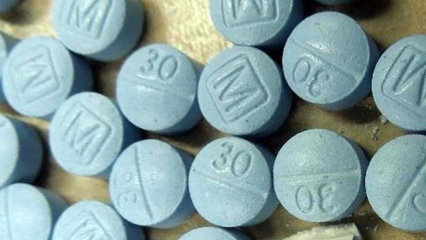
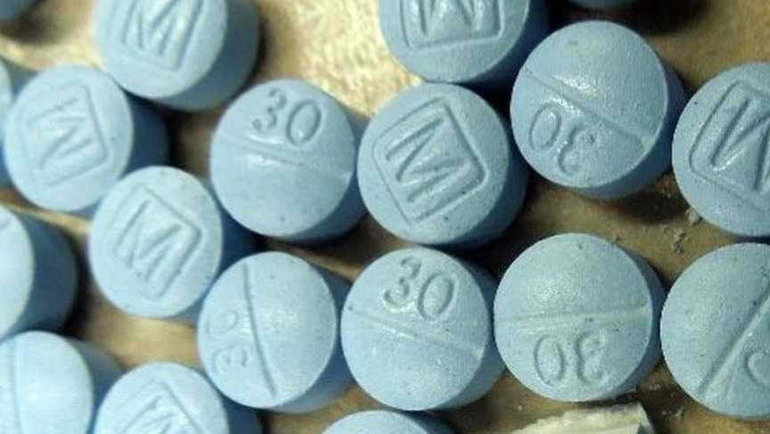

Duo Charged with Supplying Fentanyl to a Drugs Vendor
A federal grand jury indicted two Southern California men suspected of supplying fentanyl-laced pills and methamphetamine to a darknet drugs vendor linked to five overdose deaths.

Omar Navia, 38, and Adan Ruiz, 27, were charged in a two-count indictment with one count of conspiracy to distribute and to possess with the intent to distribute fentanyl and methamphetamine. Ruiz was also charged with one count of distribution of fentanyl.
The two men are accused of supplying counterfeit oxycodone pills and methamphetamine to Rajiv Srinivasan, 38, and Michael Ta, 25, who resold them via the "redlightlabs" vendor profile on multiple dark web marketplaces.
Srinivasan was in charge of running the vendor accounts while Ta mailed the drugs to their buyers. After receiving buyers' orders Srinivasan would allegedly inform Navia and Ruiz of the quantities ordered. Navia and Ruiz would then deliver the drugs to Ta for mailing. Srinivasan paid Navia and Ruiz in crypto or through Apple Cash, CashApp, PayPal, Venmo, and Zelle.
Srinivasan and Ta were arrested in November 2022 following an investigation by the FBI. The investigators reportedly recovered an electronic document with records of sales made by the duo. The document showed that between May and November 2022, the duo dealt with approximately 1,500 buyers and processed 3,800 orders. They consequently distributed approximately 123,188 fentanyl-laced pills and 143 kilograms of methamphetamine. They also distributed undisclosed quantities of fentanyl powder, heroin, and cocaine.
Srinivasan and Ta were charged with drug trafficking offenses in a 19-count indictment. The two men pleaded guilty and admitted that their drug trafficking operation resulted in the fatal overdoses of five individuals.
Navia and Ruiz were arrested on November 2, 2023. They appeared before a court in Los Angeles on the same day and pleaded not guilty. They were placed in pretrial detention. The trial is scheduled for December 26.

Omar Navia, 38, and Adan Ruiz, 27, were charged in a two-count indictment with one count of conspiracy to distribute and to possess with the intent to distribute fentanyl and methamphetamine. Ruiz was also charged with one count of distribution of fentanyl.
The two men are accused of supplying counterfeit oxycodone pills and methamphetamine to Rajiv Srinivasan, 38, and Michael Ta, 25, who resold them via the "redlightlabs" vendor profile on multiple dark web marketplaces.
Srinivasan was in charge of running the vendor accounts while Ta mailed the drugs to their buyers. After receiving buyers' orders Srinivasan would allegedly inform Navia and Ruiz of the quantities ordered. Navia and Ruiz would then deliver the drugs to Ta for mailing. Srinivasan paid Navia and Ruiz in crypto or through Apple Cash, CashApp, PayPal, Venmo, and Zelle.
Srinivasan and Ta were arrested in November 2022 following an investigation by the FBI. The investigators reportedly recovered an electronic document with records of sales made by the duo. The document showed that between May and November 2022, the duo dealt with approximately 1,500 buyers and processed 3,800 orders. They consequently distributed approximately 123,188 fentanyl-laced pills and 143 kilograms of methamphetamine. They also distributed undisclosed quantities of fentanyl powder, heroin, and cocaine.
Srinivasan and Ta were charged with drug trafficking offenses in a 19-count indictment. The two men pleaded guilty and admitted that their drug trafficking operation resulted in the fatal overdoses of five individuals.
Navia and Ruiz were arrested on November 2, 2023. They appeared before a court in Los Angeles on the same day and pleaded not guilty. They were placed in pretrial detention. The trial is scheduled for December 26.